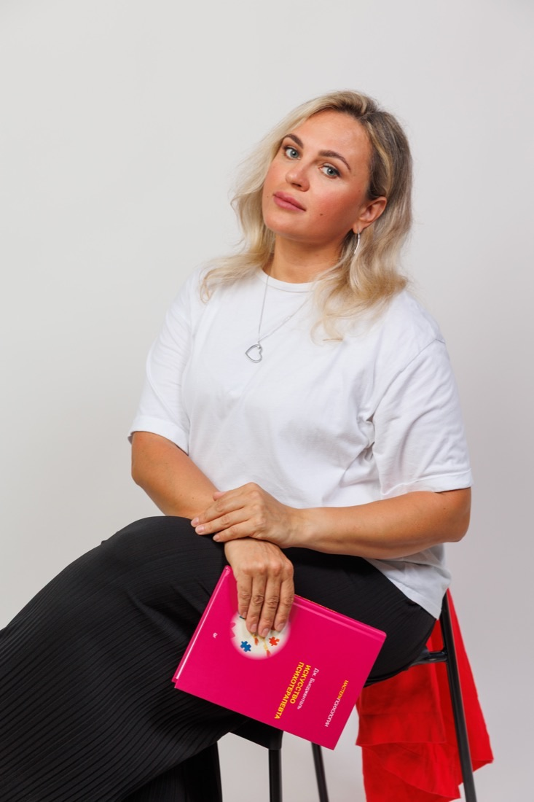
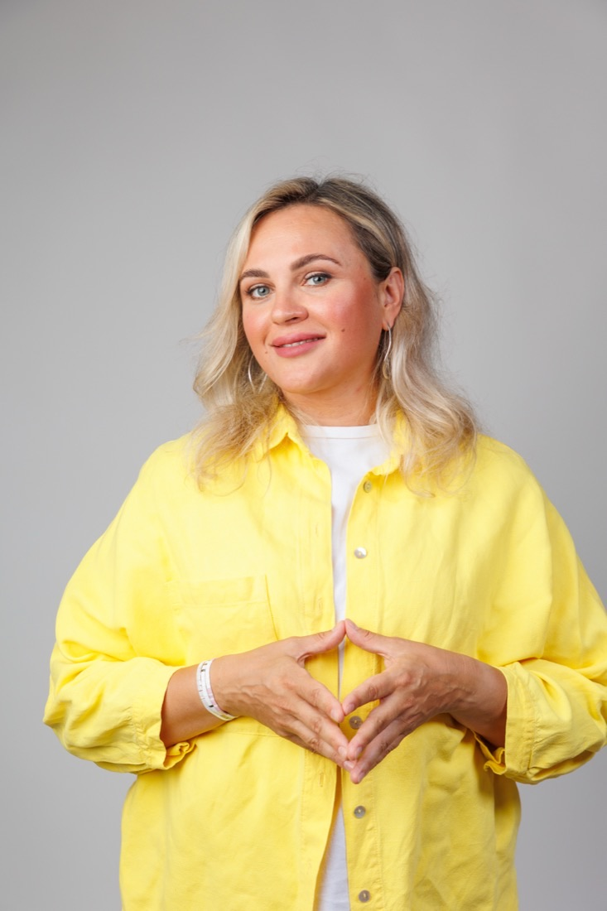
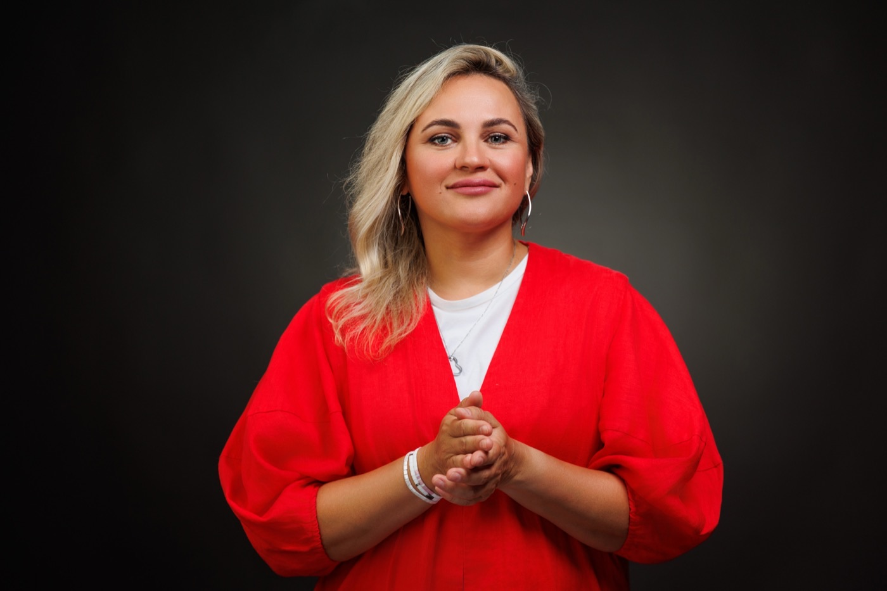
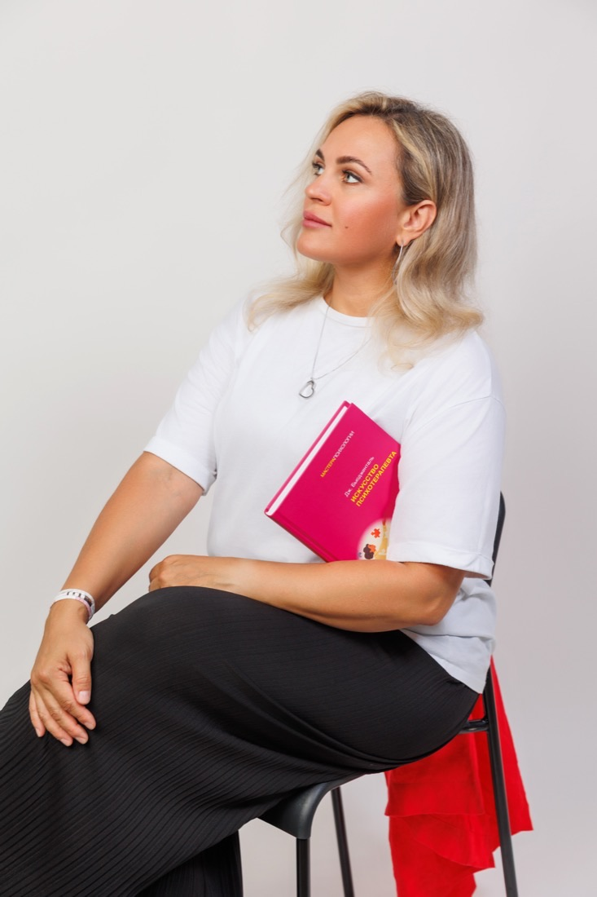
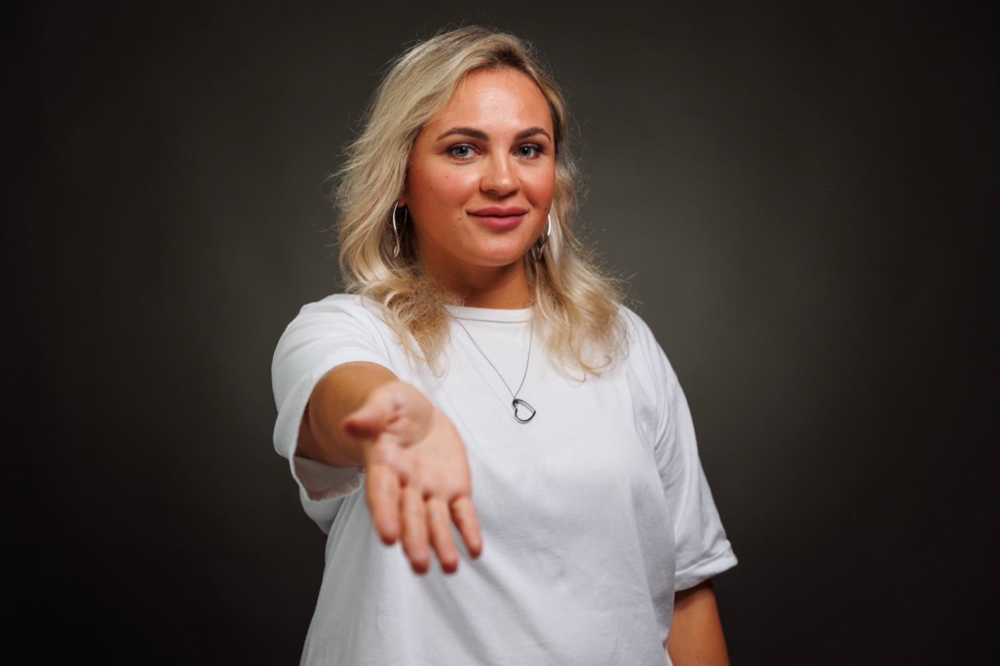

Выберите тему выше, чтобы посмотреть подробнее.
«В своей работе я не рассматриваю зависимость как слабость характера. Вместе мы исследуем, какую роль она играет в вашей жизни, какие чувства помогает пережить или избежать, и постепенно ищем способы вернуть себе свободу выбора.»

Записаться на консультацию можно через WhatsApp или Telegram. Напишите несколько слов о том, что вас сейчас беспокоит, и я предложу удобное время для первой встречи.
Обычно я рекомендую встречаться один раз в неделю. Такая регулярность помогает сохранять динамику терапии и делает изменения более устойчивыми.
Если со временем вам понадобится другой формат, мы всегда сможем обсудить это вместе.
Все консультации проходят онлайн в Zoom.
Пожалуйста, заранее позаботьтесь о стабильном интернете и выберите спокойное место, где вас никто не будет отвлекать. Это поможет чувствовать себя свободно и сосредоточиться на нашей работе.
Если вы опаздываете, консультация заканчивается в запланированное время.
Если встреча отменяется или переносится менее чем за 24 часа, консультация оплачивается полностью.
Для меня важно, чтобы вы чувствовали себя в безопасности.
Всё, о чём мы говорим на консультациях, остаётся между нами. Я соблюдаю профессиональную этику и гарантирую полную конфиденциальность нашей работы.

Психология — моя вторая профессия, в которую я пришла уже в осознанном возрасте.
До этого я много лет работала в сфере PR, журналистики, была теле- и радиоведущей в Красноярске. Я вела прямые эфиры и очень часто приглашала психологов. Меня искренне интересовали темы отношений, семьи, кризисов и поиска себя. Уже тогда я понимала, что именно эти разговоры мне ближе всего.
Моя практика началась с групп для мам «Мама на нуле». Я работала с женщинами, которые очень устали и потеряли себя в декрете.
Позже вместе с коллегой я вела женские терапевтические группы — пространство поддержки, исследования себя и бережных изменений.
Постепенно сформировалась моя частная практика в Красноярске. Я продолжала учиться, получила семейную специализацию, начала работать с парами и успешно сертифицировалась как гештальт-терапевт.
В 2024 году я эмигрировала в Черногорию вместе с двумя детьми.
Сегодня я продолжаю вести частную практику онлайн, обучаюсь новым профессиональным специализациям и работаю с людьми, живущими в разных странах.
Уже в эмиграции и нескольких лет после тяжёлого развода я встретила человека, с которым сегодня строю новую семью. На двоих у нас четверо детей.
Мне близки темы отношений, эмиграции, эмоционального насилия, созависимости и прав женщин. Во многом потому, что это не только темы моей работы, но и часть моего жизненного опыта.

Моя практика основана на профильном психологическом образовании, многолетней подготовке в гештальт-подходе и постоянном профессиональном развитии.
С 2019 года веду частную практику, работаю с индивидуальными клиентами, парами и семьями. Работаю с жизненными кризисами, отношениями, эмиграцией, разводом, поиском себя и другими сложными жизненными ситуациями. За это время провела более 3000 консультаций.
Московский институт психоанализа (2017–2020)
Психолог-консультант.
Красноярский государственный университет (2001–2006)
Специалист по связям с общественностью.
В 2024 году получила европейскую сертификацию гештальт-терапевта EAGT (European Association for Gestalt Therapy).
Московский институт гештальта и психодрамы (МИГИП):
Международный институт гештальта (MIG):
Считаю профессиональное развитие неотъемлемой частью работы психотерапевта. Поэтому я регулярно:
Оплата возможна в евро или рублях.
После первой консультации я закрепляю за вами стоимость на 12 месяцев. Если в течение этого времени стоимость моей работы изменится, для вас она останется прежней.
Для подтверждения первой консультации необходима 100% предоплата. Это позволяет забронировать удобное для вас время.
Последующие встречи оплачиваются после консультации.
Не обязательно ждать момента, когда станет совсем тяжело.
Чаще всего люди приходят тогда, когда понимают, что привычные способы справляться больше не работают. Отношения повторяются по одному и тому же сценарию, тревога не проходит, сложно принять решение, пережить развод, адаптироваться после переезда или просто хочется лучше понять себя.
Если вы всё чаще ловите себя на мысли: «Может быть, мне уже пора обратиться к психологу?» — скорее всего, это уже хороший повод записаться на первую встречу.
Самое главное — если вы уже нашли своего специалиста, действительно записаться на первую встречу, выбрать удобное для себя время и сделать его приоритетом. Например, если вы записались на понедельник, значит, это время вы посвящаете себе и нашей встрече.
Это уже большая часть работы.
Вам не нужно готовить какой-то конспект, заранее продумывать, что говорить, или составлять специальную историю о себе. В процессе знакомства мы всё это постепенно обсудим.
Вам достаточно просто прийти.
Первая встреча — это знакомство.
Вы рассказываете о себе столько, сколько считаете нужным, и делитесь той сложностью или проблемой, которая привела вас на консультацию.
Я внимательно слушаю, наблюдаю за вами, задаю вопросы.
Иногда уже на первой встрече становится понятно, что проблема лежит совершенно в другой плоскости. И так тоже бывает.
Вместе мы обсуждаем, что происходит сейчас, с чем можно работать, какие возможности есть у терапии и каким может быть наш дальнейший путь.
У этого вопроса нет универсального ответа.
Иногда человеку достаточно нескольких встреч, чтобы разобраться с конкретной ситуацией. А иногда терапия становится более длительным процессом, если запрос связан с повторяющимися жизненными сценариями, отношениями, самооценкой или глубокими внутренними изменениями.
Мы регулярно обсуждаем ход нашей работы, поэтому вы всегда понимаете, зачем продолжаете терапию и каких изменений хотите достичь.
Краткосрочная терапия чаще помогает разобраться с конкретной жизненной ситуацией: кризисом, расставанием, переездом, сложным выбором или конфликтом.
Долгосрочная терапия — это возможность глубже понять себя, изменить привычные сценарии отношений, научиться выстраивать границы, лучше слышать свои чувства и постепенно менять качество своей жизни.
Не обязательно.
Для семейной терапии очень важно, чтобы решение прийти было совместным.
Если инициатива исходит только от вас, а партнёр не хочет участвовать в терапии или приходит только потому, что его уговорили, такая работа редко бывает эффективной.
В этом случае я рекомендую сначала начать индивидуальную терапию. Это может оказаться гораздо полезнее, чем пытаться привести на семейную консультацию человека, который пока к ней не готов.
Если мы уже работаем с вами индивидуально, я не консультирую ваших близких родственников или партнёра.
Это важная часть профессиональной этики и сохранения терапевтических границ.
Если вашему близкому человеку понадобится психологическая помощь, я с удовольствием порекомендую коллегу.
Не обязательно разбираться в этом самостоятельно.
Психиатр — это врач, который при необходимости проводит диагностику и назначает медикаментозное лечение.
Психолог работает с эмоциональными трудностями, отношениями, жизненными кризисами и внутренними изменениями.
Очень часто эти два направления дополняют друг друга.
Даже если вы сначала обратитесь к психологу, мы вместе сможем понять, есть ли необходимость в консультации психиатра. При необходимости я обязательно порекомендую такого специалиста.
Если вы предупредили меня не менее чем за 24 часа, мы перенесём встречу на любое другое удобное время.
Если отмена происходит менее чем за сутки, консультация оплачивается полностью.
Да.
Главное — сообщить об этом не позднее чем за 24 часа до начала консультации.
Да.
Конфиденциальность — один из главных принципов моей работы.
Всё, о чём мы говорим на консультациях, остаётся между нами. Я соблюдаю профессиональную этику и гарантирую полную конфиденциальность нашей работы.
Я работаю в гештальт-подходе.
Для меня важно не только то, что вы рассказываете, но и то, как вы проживаете происходящее.
Во время консультации я могу обращать внимание на то, как вы говорите, как дышите, как реагирует ваше тело, какие чувства проявляются в разговоре.
Гештальт-терапия помогает замечать, где вы действуете по привычке, а где действительно выбираете сами. Постепенно появляется важная пауза — возможность остановиться и спросить себя: «Кто я сейчас? Чего я хочу именно в этот момент?»
Терапия помогает вернуть себе авторство своей жизни: осознанно выбирать, как быть с собой и с другими, а не жить только привычными сценариями.
Моя задача — не сказать вам, как правильно жить, а помочь лучше понять себя, свои чувства и потребности. Вместе мы будем искать решения, которые подойдут именно вам и будут опираться на ваши ценности, а не на мои представления о том, «как должно быть».

Напишите пару строк о том, что вас сейчас волнует. Я отвечу лично и предложу удобное время для знакомства.